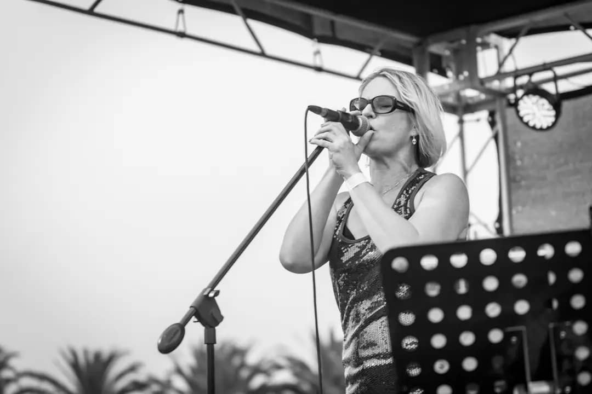
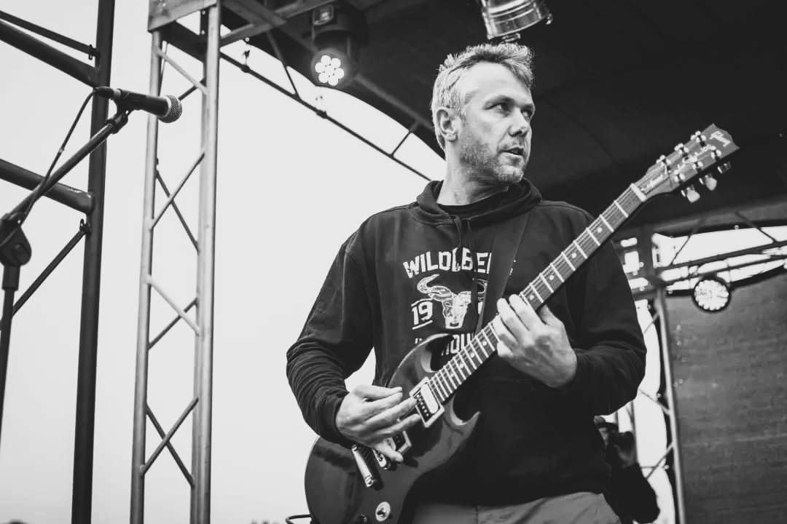
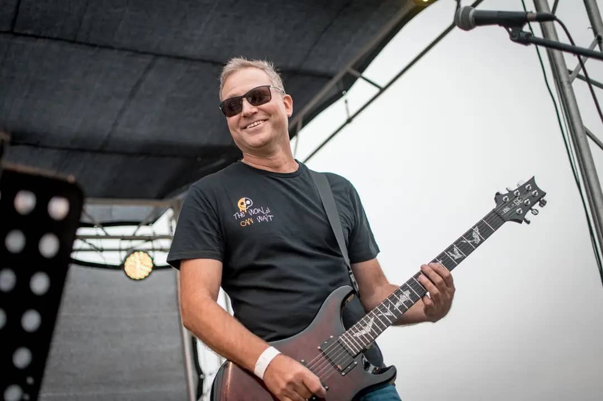
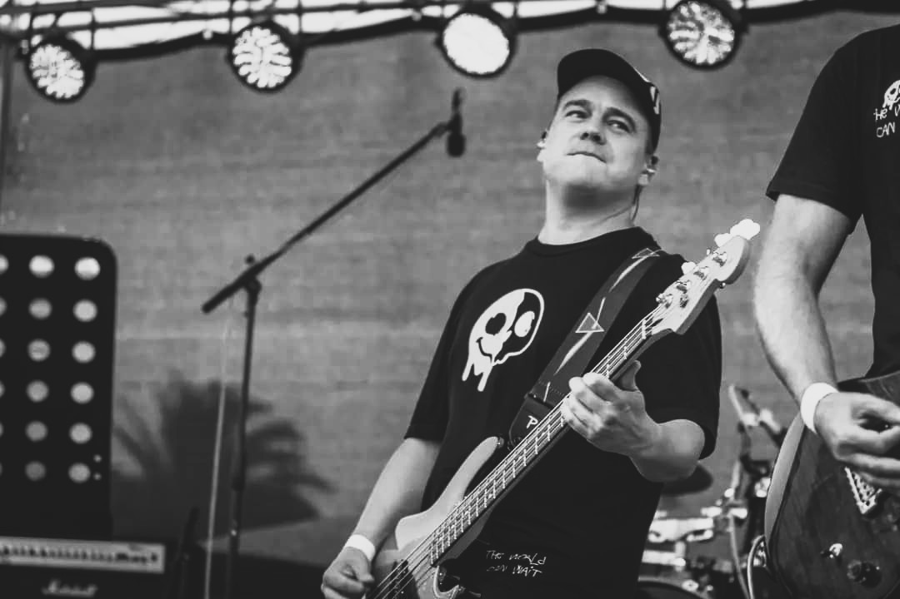
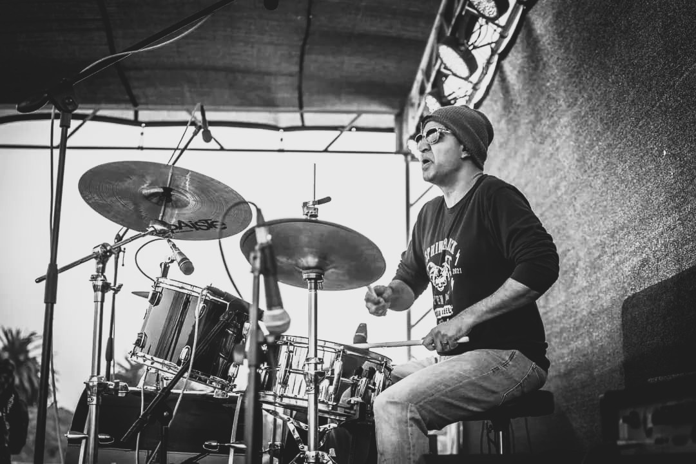
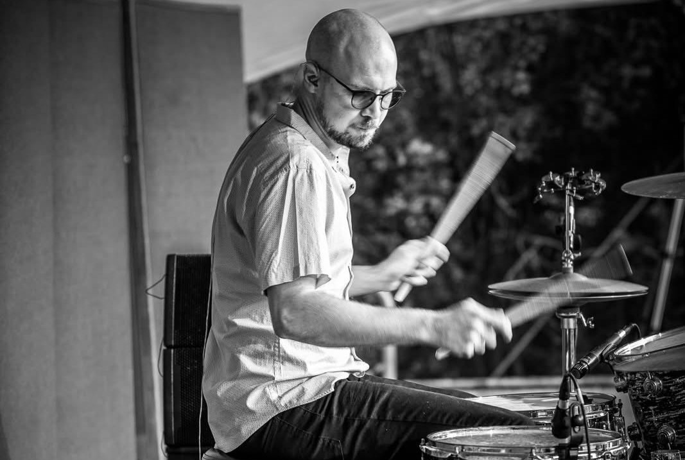

Jacky
Jacky Smith - Vocals
Jacky brings a powerful presence as the band's lead female vocalist.
In July 2022, Rene phoned Anesh about forming a new band, an idea born after Rene and George ended their previous group in the gloomy COVID era. Chris, recently relocated from Cape Town, was also up for something fresh. Within days, the four were jamming: Anesh on bass, Chris on drums, George on guitar, and Rene on vocals and guitar.
They soon realized they needed a dedicated bassist and female vocals. By luck, Rene had already connected with Jacky, who joined right away. The search for a bassist took longer. Eventually, Rene found Morne through a local sound guy in Swakopmund.
The group decided to focus on covers for fun, having all been in various bands before. Choosing a band name was not easy, but "The World Can Wait" stuck. Their first show was at SKW in August 2023, and more gigs have followed. They are printing shirts, building their online presence, and planning to record original tracks soon.
Stay tuned.

Jacky Smith - Vocals
Jacky brings a powerful presence as the band's lead female vocalist.

Rene Traut - Vocals and Guitar
Rene drives the band's sound with his emotive vocals and versatile guitar work.

Georg Stadtherr - Guitar
Georg shapes the band's melody with his expressive guitar riffs.

Morne Pretorius - Bass
Morne anchors the group's rhythm section with deep, steady bass lines.

Anesh Morar - Drums, Keyboard, Vocals
Anesh adds a dynamic edge, switching seamlessly between instruments.

Chris De Chavonnes Vrug - Drums, Guitar, Vocals
Chris delivers versatility across instruments, rounding out the band's sound.